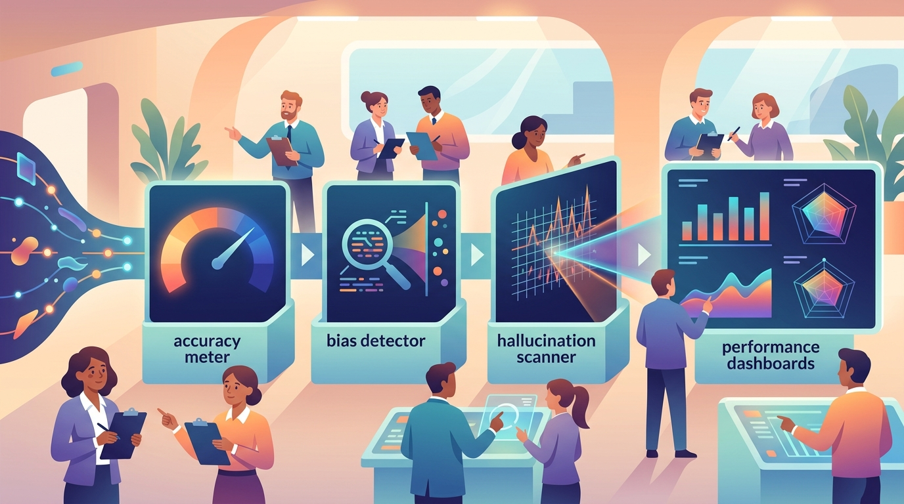

"Without data, you're just another person with an opinion. Without evaluation, you're just another model with a prediction."
A Measurement-Obsessed AI Agent

Building LLM applications is only half the challenge; knowing whether they actually work is the other half. Unlike traditional software where correctness is binary, LLM outputs are probabilistic, subjective, and context-dependent. A model that performs brilliantly on one prompt may fail catastrophically on a slight rephrasing. This fundamental uncertainty makes rigorous evaluation, principled experiment design, and continuous observability essential for every LLM project.
This module covers the complete evaluation and monitoring lifecycle. It begins with core evaluation metrics (perplexity, BLEU, ROUGE, BERTScore, LLM-as-Judge) and standard benchmarks (MMLU, HumanEval, MT-Bench, Chatbot Arena). It then addresses experimental design with statistical rigor, including bootstrap confidence intervals, paired tests, and ablation studies. Specialized evaluation for RAG and agent systems follows, covering RAGAS metrics, trajectory evaluation, and frameworks like DeepEval and Phoenix.
The module also covers testing strategies for LLM applications (unit tests, red teaming, prompt injection testing, CI/CD integration), production observability with tracing tools (LangSmith, Langfuse, Phoenix), monitoring for prompt drift, provider version drift, and embedding drift, and reproducibility practices including prompt versioning, config management with Hydra, experiment tracking with MLflow and Weights & Biases, and containerized reproducibility with Docker.
Who: A platform engineering team at Stripe building an internal LLM assistant for developer documentation (2023).
Situation: The team deployed a RAG-based assistant that answered developer questions about Stripe's APIs. Internal demos went well, and leadership approved a broader rollout.
Problem: Within two weeks of wider release, support tickets revealed the assistant was confidently generating plausible but incorrect API parameter names, leading developers to write broken integrations.
Dilemma: The team had no systematic evaluation pipeline. They had relied on "vibe checks" (manually trying a handful of queries) rather than quantitative faithfulness metrics.
Decision: They paused the rollout and built a RAGAS-based evaluation suite measuring faithfulness, answer relevancy, and context precision across 500 curated question-answer pairs.
How: Each nightly build ran the full evaluation suite automatically. Any regression below a 0.85 faithfulness threshold blocked deployment.
Result: Faithfulness scores jumped from 0.71 to 0.93 within three iterations of prompt and retrieval tuning. Hallucinated API parameters dropped to near zero.
Lesson: Qualitative "looks good" testing is dangerous for LLM applications. Automated, metric-driven evaluation catches failure modes that human spot-checks miss entirely.
The unofficial motto of LLM evaluation: "It works on my prompt." Every team discovers, usually the hard way, that the five examples they tested during development bear little resemblance to the thousands of creative ways real users will phrase their questions.
Who: Duolingo's AI content team evaluating GPT-4 for generating language exercise explanations (2023).
Situation: The team needed to auto-generate grammar explanations for hundreds of new language courses. They chose BLEU score against human-written references as their primary metric.
Problem: BLEU scores were mediocre (0.32), leading the team to nearly reject the LLM approach. However, human evaluators actually preferred the LLM explanations in 61% of blind comparisons.
Dilemma: BLEU measures n-gram overlap with a specific reference, but good explanations can be phrased many valid ways. The metric was penalizing creativity and alternative phrasings.
Decision: They switched to a multi-metric approach: BERTScore for semantic similarity, LLM-as-Judge for pedagogical quality, and human evaluation on a rotating sample.
How: A composite score weighted BERTScore (30%), LLM-as-Judge (40%), and weekly human review (30%), with automatic flagging when any single metric dropped below threshold.
Result: The composite metric correlated 0.87 with human preference, compared to BLEU's 0.41 correlation. The team shipped LLM-generated explanations across 12 new courses.
Lesson: No single metric captures LLM output quality. Teams that rely on one number will either reject good outputs or ship bad ones. Multi-metric evaluation aligned with human judgment is essential.
Who: The Notion AI team building a multi-step writing assistant with tool-calling capabilities (2024).
Situation: Their agent could search documents, summarize content, and compose new pages. Traditional output-only evaluation missed cases where the agent took unnecessary steps or called wrong tools.
Problem: The agent achieved 78% task completion, but users reported it felt "slow and clunky." Analysis revealed the agent was making 3x more tool calls than necessary on average.
Dilemma: Evaluating only final output rewarded correct answers regardless of how wastefully they were produced. Evaluating only efficiency penalized thorough reasoning.
Decision: They built a trajectory evaluation framework scoring both outcome correctness and path efficiency, weighted by task complexity.
How: Each agent run was logged as a trace. Evaluators (both human and LLM-as-Judge) scored the trace on four dimensions: correctness, efficiency, tool selection accuracy, and graceful error handling.
Result: After optimizing against trajectory metrics, tool calls per task dropped by 58% while task completion rose to 84%. User satisfaction scores increased from 3.2 to 4.1 out of 5.
Lesson: For agent systems, evaluating only the final answer is like grading a math test without looking at the work. Trajectory evaluation reveals inefficiencies that output metrics completely miss.
Who: Instacart's ML platform team operating an LLM-powered product search and recommendation system (2024).
Situation: Their LLM-enhanced search handled millions of queries daily, rewriting natural language queries ("something for a toddler's birthday party") into structured product searches.
Problem: On the Wednesday before Black Friday, latency on LLM calls spiked from 200ms to 1.8 seconds. Without tracing, the team would have spent hours debugging.
Dilemma: The spike could have been caused by provider throttling, prompt changes, traffic volume, or a combination. Rolling back blindly risked breaking features that were working fine.
Decision: Thanks to their Langfuse tracing setup, they identified the root cause in 12 minutes: a prompt template change deployed that morning had doubled average token count.
How: Distributed traces showed the latency increase correlated perfectly with one specific prompt version. Token count histograms confirmed the prompt was generating unnecessarily verbose intermediate reasoning.
Result: They reverted the prompt template, latency returned to normal, and Black Friday search handled 4x normal traffic without issues.
Lesson: Observability is not optional overhead; it is insurance. The 12-minute diagnosis paid for the entire year's investment in tracing infrastructure.
Who: The Weights and Biases (W&B) internal team building LLM features for their own platform (2024).
Situation: Ironically, the company that builds experiment tracking tools discovered their own LLM feature team could not reproduce results from two weeks earlier.
Problem: A prompt engineering improvement that showed +12% on their eval suite could not be replicated. The team had changed the prompt, the model version (GPT-4 to GPT-4 Turbo), and the eval dataset simultaneously.
Dilemma: Without isolating variables, they could not determine whether the improvement came from the prompt change, the model upgrade, or a subtle shift in eval data composition.
Decision: They implemented a strict versioning protocol: every experiment logs the exact prompt hash, model identifier, retrieval config, and eval dataset hash as immutable metadata.
How: Using Hydra for config management and their own W&B platform for tracking, each run became fully reproducible. A single CLI command could recreate any historical experiment.
Result: Time to diagnose regressions dropped from days to hours. The team discovered the original improvement was 60% prompt and 40% model upgrade, enabling them to keep gains when switching providers.
Lesson: If the company that literally builds experiment tracking tools can fall into reproducibility traps, so can anyone. Versioning everything is not paranoia; it is professionalism.
There is a recurring joke among ML engineers that LLM evaluation is the field where you use one unreliable system (an LLM judge) to evaluate another unreliable system (your LLM application), then present the results with four decimal places of confidence. Somehow, it works better than the alternatives.
Zheng, L., Chiang, W.-L., Sheng, Y., Zhuang, S., Wu, Z., Zhuang, Y., Lin, Z., Li, Z., Li, D., Xing, E. P., Zhang, H., Gonzalez, J. E., & Stoica, I. (2023). "Judging LLM-as-a-Judge with MT-Bench and Chatbot Arena." arXiv:2306.05685
Introduces the LLM-as-Judge paradigm and the Chatbot Arena leaderboard for scalable, human-aligned evaluation.
Es, S., James, J., Espinosa-Anke, L., & Schockaert, S. (2024). "RAGAS: Automated Evaluation of Retrieval Augmented Generation." arXiv:2309.15217
Proposes the RAGAS framework with faithfulness, answer relevancy, and context precision metrics for RAG evaluation.
Zhang, T., Kishore, V., Wu, F., Weinberger, K. Q., & Artzi, Y. (2020). "BERTScore: Evaluating Text Generation with BERT." arXiv:1904.09675
Introduces BERTScore, a semantic similarity metric using contextual embeddings that correlates better with human judgment than n-gram metrics.
Hendrycks, D., Burns, C., Basart, S., Zou, A., Mazeika, M., Song, D., & Steinhardt, J. (2021). "Measuring Massive Multitask Language Understanding." arXiv:2009.03300
Introduces MMLU, the standard benchmark for measuring broad knowledge and reasoning across 57 subjects.
Papineni, K., Roukos, S., Ward, T., & Zhu, W.-J. (2002). "BLEU: a Method for Automatic Evaluation of Machine Translation." ACL 2002
The foundational n-gram overlap metric for machine translation that remains widely used despite its limitations for open-ended generation.
Huyen, C. (2022). Designing Machine Learning Systems. O'Reilly Media. oreilly.com
Covers end-to-end ML system design including monitoring, experiment tracking, and production evaluation practices.
Efron, B., & Tibshirani, R. J. (1994). An Introduction to the Bootstrap. Chapman & Hall/CRC. doi.org/10.1201/9780429246593
The definitive reference for bootstrap methods used extensively in LLM evaluation confidence interval estimation.
LangSmith. LangChain, Inc. smith.langchain.com
Platform for tracing, evaluating, and monitoring LLM applications with built-in dataset management and annotation tools.
Langfuse. Langfuse GmbH. github.com/langfuse/langfuse
Open-source LLM observability platform providing tracing, prompt management, and evaluation scoring.
Phoenix. Arize AI. github.com/Arize-ai/phoenix
Open-source observability library for LLM applications with tracing, evaluation, and embedding drift visualization.
promptfoo. github.com/promptfoo/promptfoo
CLI tool for testing and evaluating LLM prompts with assertion-based testing and CI/CD integration.
DeepEval. Confident AI. github.com/confident-ai/deepeval
Unit testing framework for LLM applications supporting RAGAS metrics, hallucination detection, and custom evaluators.
In the next section, Section 25.1: LLM Evaluation Fundamentals, we establish evaluation fundamentals, covering metrics, benchmarks, and the unique challenges of assessing LLM quality.